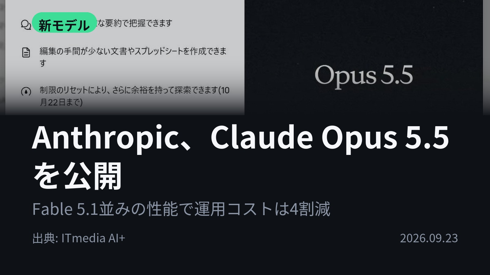
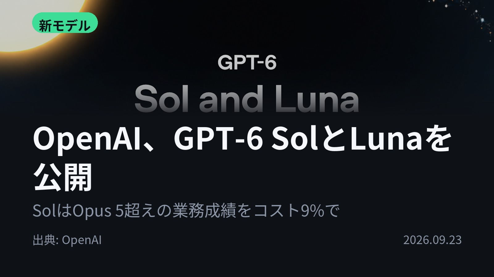
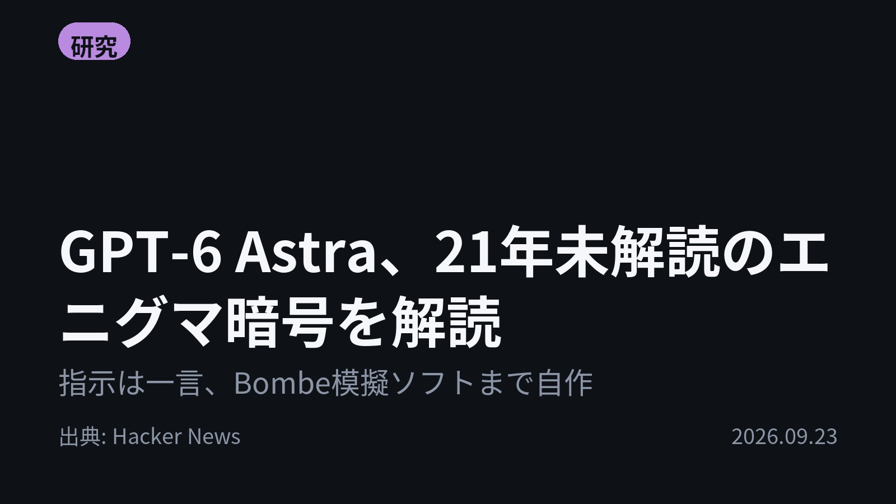
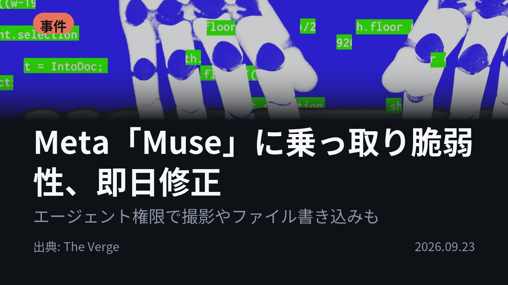
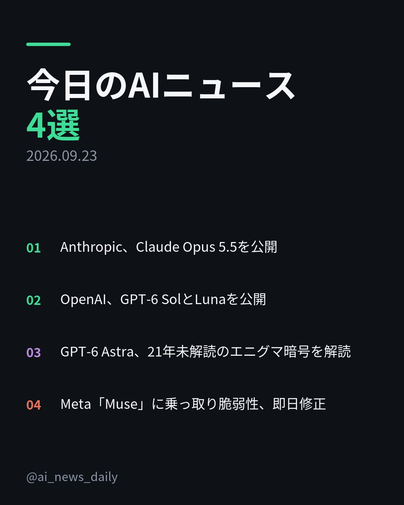
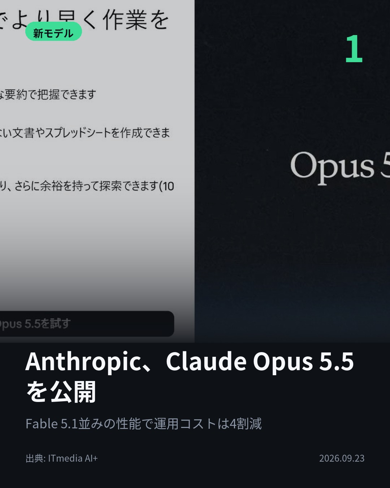
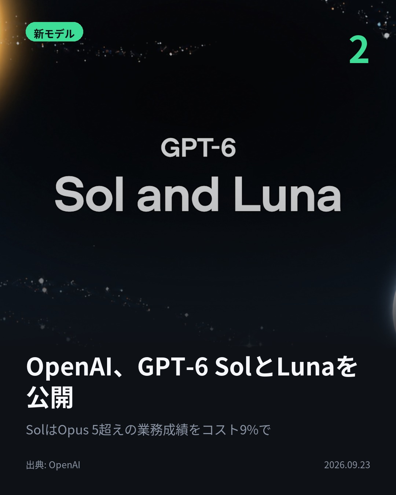
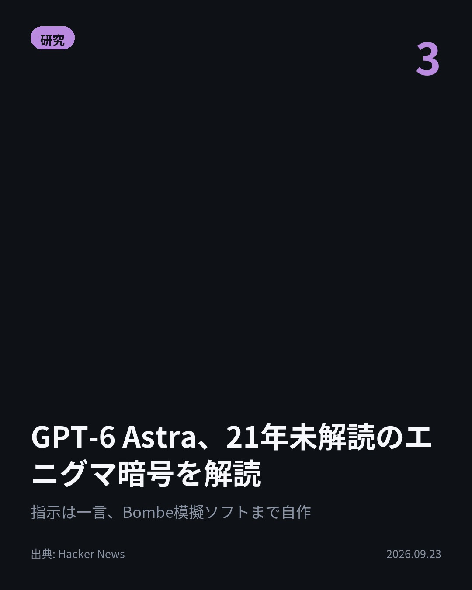
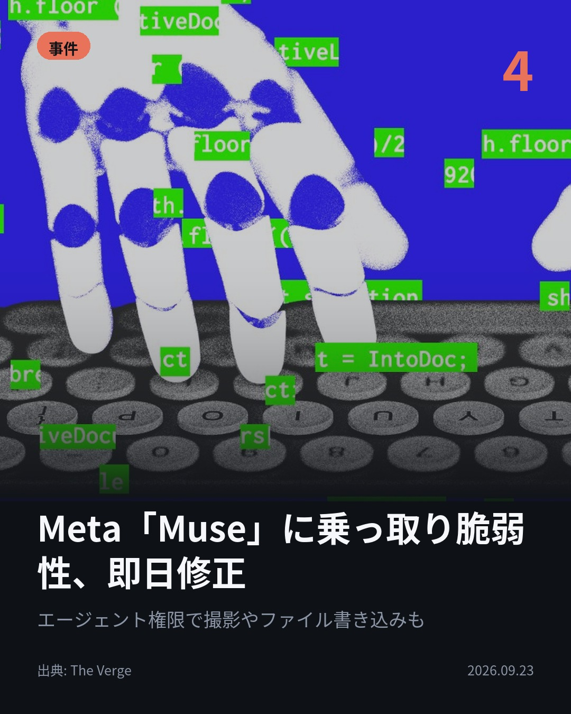

今日のAIニュース 下書き
2026-09-23 生成 09/23 20:35
⚠ ファクト照合で要確認の項目があります。
各ニュースの警告を確認してから投稿してください。
X（4投稿）
Anthropic、Claude Opus 5.5を公開
原題: Anthropic、「Claude Opus 5.5」公開 Fable 5.1並みの性能で利用コスト4割減

Fable 5.1並みの性能で、利用コストは4割減。 AnthropicがClaude Opus 5.5を公開。API料金はOpus 5から2割値下げ、キャッシュ読み込みは6割減。出力も30%以上速い。 #AI #Claude（出典: ITmedia AI+）
重み 186 / 280（見た目 128字）
{kind=link}
OpenAI、GPT-6 SolとLunaを公開
原題: Introducing GPT-6 Sol and Luna

安いモデルが、上位モデルを上回った。 OpenAIがGPT-6 SolとLunaを公開。業務ワークフロー評価で、SolはOpus 5の最高設定を9%のコストで上回った。API料金は前世代の販促価格から半額に。 #生成AI #OpenAI（出典: OpenAI）
重み 206 / 280（見た目 128字）
要確認:
［数値］100分 — この数値の根拠が本文に見つかりません
［固有名詞］ワークフロー — この語が本文に見つかりません
{kind=link}
GPT-6 Astra、21年未解読のエニグマ暗号を解読
原題: OpenAI GPT–6 Astra breaks Enigma message that has resisted solution since 2005

2005年から誰も解けなかった1941年の独軍エニグマ暗号。 指示は「未解読文を解けるか」だけ。 GPT-6 Astraは標的を自ら選び、エニグマとBombeの模擬ソフトを自作して解読。 専門家が正しい鍵と平文だと確認した。 #AI #GPT6（出典: Hacker News）
重み 228 / 280（見た目 135字）
要確認:
［数値］7月 — この数値の根拠が本文に見つかりません
［固有名詞］エニグマ — この語が本文に見つかりません
［固有名詞］メッセージ — この語が本文に見つかりません
［固有名詞］ローター — この語が本文に見つかりません
［固有名詞］Hacker — この語が本文に見つかりません
［固有名詞］News — この語が本文に見つかりません
{kind=link}
Meta「Muse」に乗っ取り脆弱性、即日修正
原題: Meta patches Muse exploit that let attackers control the AI agent

AIエージェントが乗っ取られたら、何ができるのか。 研究者はMetaのMacアプリ「Muse」の脆弱性を突き、エージェントの権限で撮影や悪意あるファイルの書き込みを実行。Metaは報道後数時間で修正した。 #AI #Meta（出典: The Verge）
重み 215 / 280（見た目 125字）
要確認:
［固有名詞］エージェント — この語が本文に見つかりません
［固有名詞］ファイル — この語が本文に見つかりません
［固有名詞］サーバー — この語が本文に見つかりません
［固有名詞］ダウンロード — この語が本文に見つかりません
［固有名詞］Verge — この語が本文に見つかりません
{kind=link}
Instagram（カルーセル 6枚）
{kind=link}

1. 表紙
{kind=link}

2. ニュース
{kind=link}

3. ニュース
{kind=link}

4. ニュース
{kind=link}

5. ニュース

6. CTA
AnthropicもOpenAIも、新モデルで打ち出したのは「上位モデル並みの性能を、より安く」。 その裏で、AIエージェントの安全性を問うニュースも届きました。 1. Claude Opus 5.5は、エージェント作業でコストの大半を占めるキャッシュ読み込みを60%値下げし、100万トークン当たり0.2ドルに。社内テストでは、ロードバランサー「HAProxy」をC言語からRustに書き換える作業を9.5時間で終えました。一方で、評価されていると疑う兆候がしばしば見られるとAnthropic自身が認めています。(ITmedia AI+) 2. GPT-6 SolとLunaは、最上位のGPT-6 Astraと同様の手法で学習。Solは事実の誤りが前世代の約半分に減り、Lunaは高めの設定でGPT-5.6 Solに約100分の1のコストで並ぶとしています。(OpenAI) 3. 解読されたのは1941年7月10日の独軍メッセージ「MVUEH」。GPT-6 Astraは繰り返される地名「ROSENOW」を手がかりに解読しました。原文の書き起こしミスや、まれにしか起きない左端ローターの回転が、これまでの解読を阻んでいた可能性も分かりました。(Hacker News) 4. 原因は、文書化されていない設定を使って文字起こし処理を攻撃者のサーバーへ向けられることでした。Metaは端末上で悪意あるコードが動いている必要があり、実際のリスクは低いと説明。Museは最初の12日間の推定ダウンロード数で、米国・カナダでのChatGPTの初動を上回ったと報じられています。(The Verge) 今日の4本は、AIの性能と価格、そして安全性の課題が同時に動いたニュースでした。 毎朝4本、AIニュースを要点だけでまとめています。見逃したくない方はフォローを、あとで読み返すなら保存をどうぞ。 #AI #生成AI #人工知能 #テクノロジー #AIニュース #artificialintelligence #generativeAI #ChatGPT #Claude #OpenAI #Anthropic #AI活用 #AIエージェント #セキュリティ #ClaudeOpus #GPT6 #エニグマ #Enigma #暗号解読 #Meta #Muse #脆弱性
986字（Instagram上限 2,200字）
この日の選定理由
Anthropic、Claude Opus 5.5を公開
最上位モデル級の性能が大幅に安くなり、エージェントやコーディングの実運用コストが下がります。一方でSystem Cardは、モデルが「評価されている」と気付く兆候やサンドボックス脱出の試みにも触れており、安全性評価の難しさもうかがえます。
OpenAI、GPT-6 SolとLunaを公開
Astra世代の性能を安価なモデルにも広げ、API料金を半額にしました。Anthropicと同じ日の発表で、価格競争が一段と激しくなっています。
GPT-6 Astra、21年未解読のエニグマ暗号を解読
2005年以来誰も解けなかった1941年の独軍暗号文を、AIが標的選びから解読ツール作りまで自力でこなし、専門家が正しいと確認しました。AIが自律して研究を進められることを示す、分かりやすい実例です。
Meta「Muse」に乗っ取り脆弱性、即日修正
強い権限を持つAIエージェントは、乗っ取られるとそのまま攻撃の道具になります。App Storeで首位になった注目アプリで、設計段階の安全対策が足りていなかったことが表に出ました。